VISUAL LIBRARY & PRODUCTION ARCHIVE · 01 / 43
画面有来处。
动作能复用。
把参考图、动作配方、可运行源码和实际成片放在同一份目录里。从一张画面追到它的实现，再看它在不同内容里是否成立。
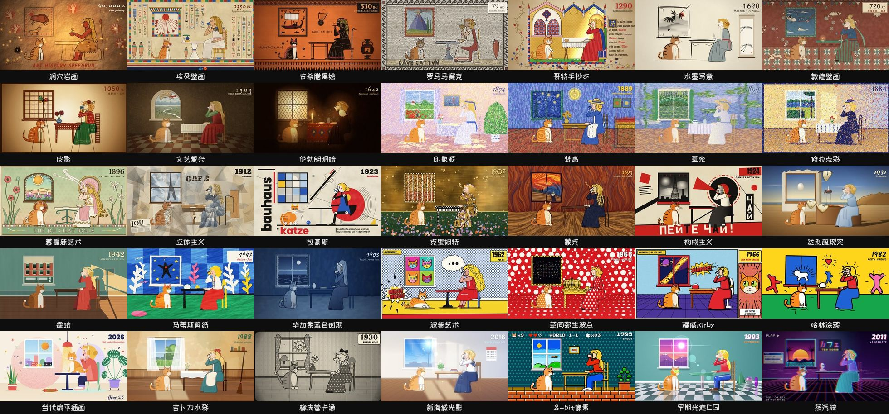
上游代码渲染总览 · weilanx / huashu-art-motion · MIT。图片可点开原尺寸；不是我们重新制作的成果。
43独立专题页
13 + 35 + 9制作风格 / 艺术场景 / 解说语法
36我们的静音成片与样片（含第一批和完整章节）
778上游原版文件，固定提交
01 / 制作风格 · 13个展示
八套独立组件工具包，连同其余演播室、拼贴与竖屏作品范式。逐项对应上游 README，不把展示数量说成独立引擎数量。


02 / 艺术场景 · 35种
保留全部预览、配方卡与场景代码，并提供单场景播放入口。每种风格的质感、母题与转场都能单独查看。


03 / 解说语法 · 9类
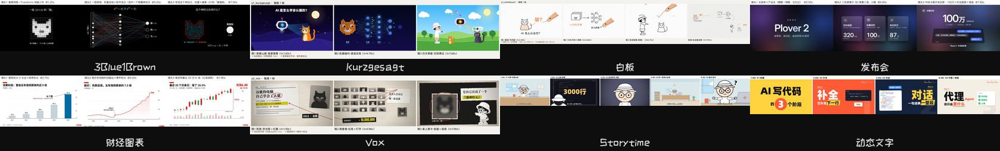
04 / 我们的制作记录
按版本保留，不把失败藏起来。这里的“完整片”只表示文件完整，认可状态单独记录。网页使用完整时长的轻量静音副本；本地原文件不改。
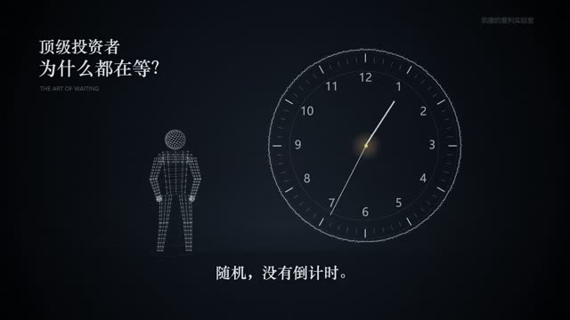
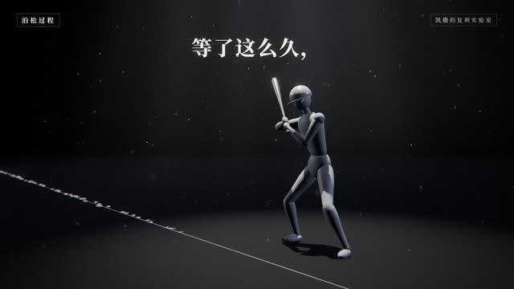
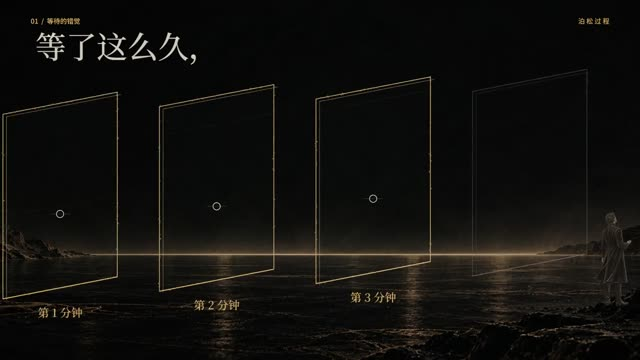
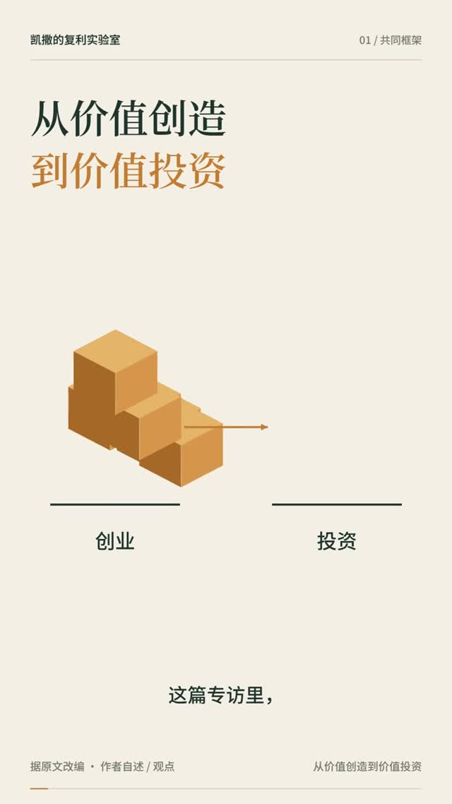
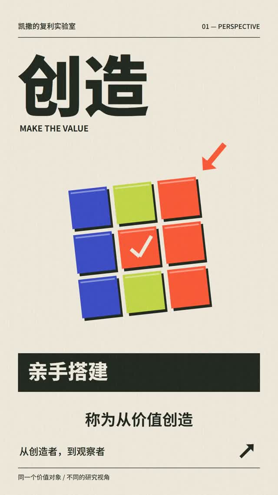
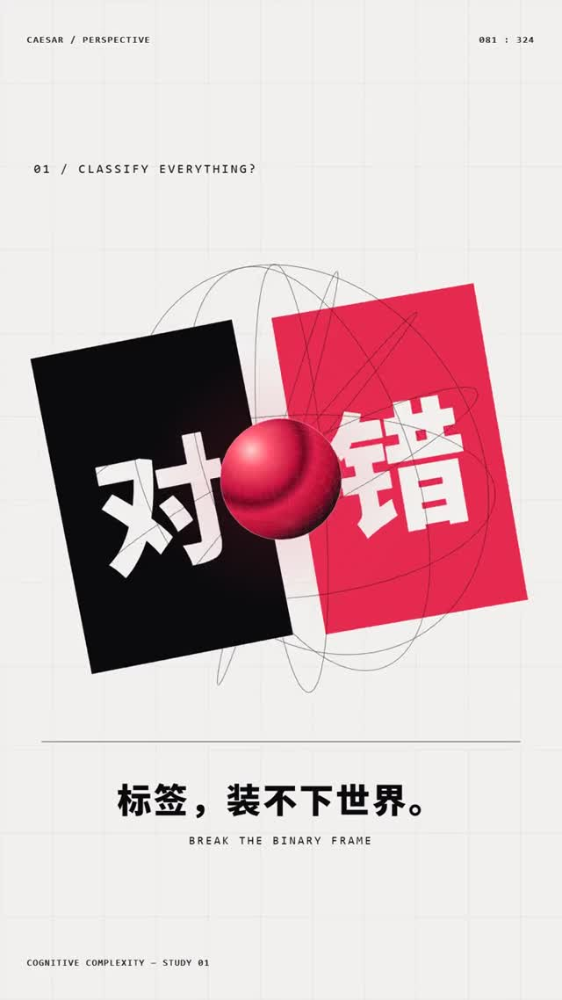
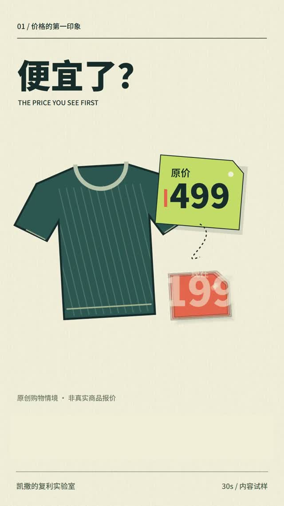
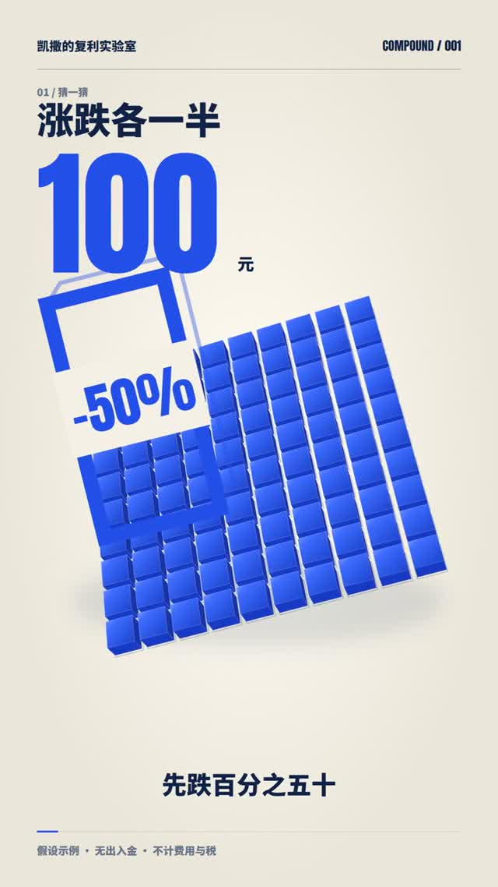
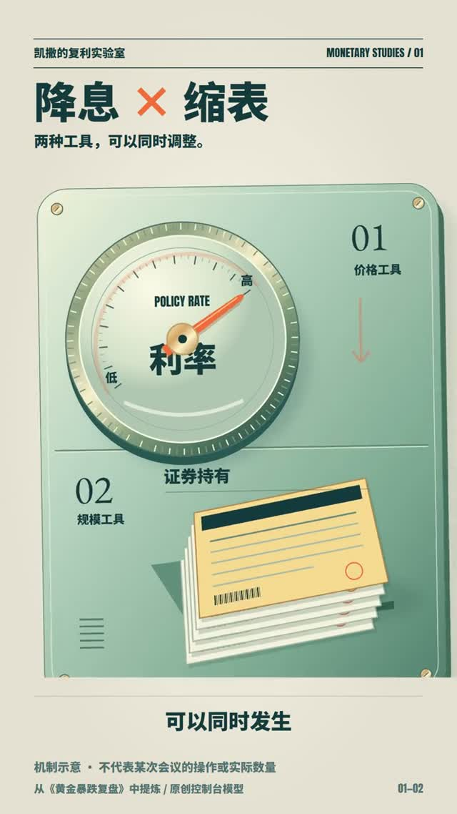
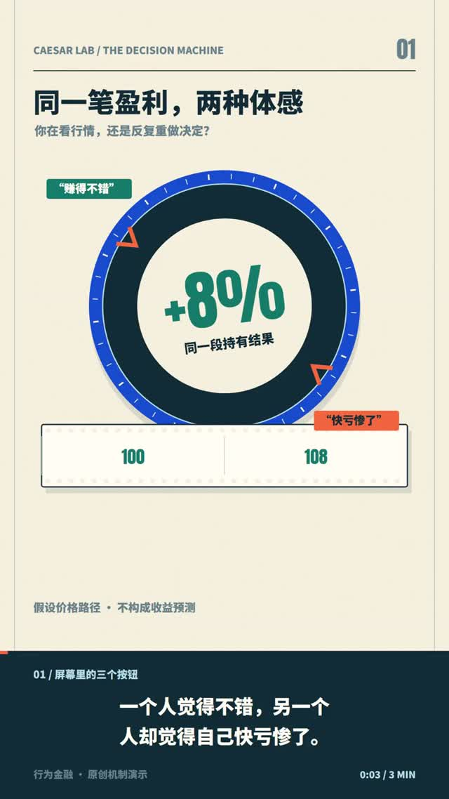
全目录
01 / 视觉库与制作档案02 / 黑金光影03 / 战术屏科普04 / 灯火史话05 / 暖纸工作台06 / 网点档案07 / 协作剪辑台08 / 暗金文献09 / 暗金音乐短片10 / Vox时间长卷11 / Vox硬切拼贴12 / 像素手绘演播室13 / 矢量手绘14 / 像素贴纸15 / 古代与传统16 / 古典油画17 / 印象派与后印象18 / 现代主义19 / 波普与街头20 / 卡通与动画21 / 数字与像素22 / 科普图解23 / 新闻与数据24 / 节奏与人物25 / 泊松过程 · 早期30秒26 / 泊松过程 · Opus30秒27 / 泊松过程 · 90秒28 / 认知复杂度 · 早期60秒29 / Week1 · 暖纸返工30 / 速度迭代 · 小样对照31 / Week1 · 第一条完整竖屏32 / 同一内容 · 三种风格33 / 公众号 · 第一组改编34 / 先别判 · 黑金学习版35 / 别急着定义世界 · 红黑穿梭36 / 三个新切口 · 30秒样片37 / 价签之外 · 60秒艺术样片38 / 消失的25元 · 60秒39 / 黄金研究 · 五步小样40 / 黄金研究 · 加深完整版41 / 指数 · 三分钟扩展42 / 看行情，还是重做决定43 / 怎样从参考变成可用组件